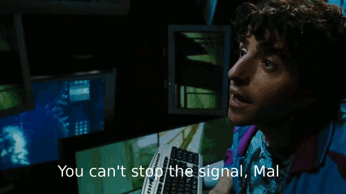

Hello yet again, cruel world
This is an obligatory blog launch post. The old blog is dead. Here’s the new one. I’ve once more moved platforms and domains. Welcome to the new show. The old website is now retired and the Internet Archive serves its backup repository. I hop from one online publishing platform to another almost more often than I post on any of them, forever dazzled by the shiny new thing. The last one was on Ghost, this one is using micro.blog. Instead of going for some kind of ironically recursive domain, this time I’ve opted for a self-inflicted real names policy. It me.
I didn’t quit Ghost because I didn’t like it. It offers a super online publishing experience. If you want to build audience, monetise content, develop a good e-newsletter following, Ghost is your bag. It’s open source if you want to self-host, is heading down a federated content syndication path, and has really good pricing tiers depending on how pro you want to go. It’s also not evil.
But I’m not in the monetisable content racket (not that I’ll refuse cash, mind you!). I don’t have an audience. I’m not terribly interested in growing one, either. I’m presently fine with just doing my part to contribute to the overall online din. But I am really interested in syndication. The drawing appeal to micro.blog wasn’t the posting GUI (it’s winning awards in minimalism!) or design, but rather what’s under the hood. It takes federated posting very seriously, incorporating ActivityPub and playing really nicely with ATProto and Nostr protocol platforms. In this iteration of the blog, I’m far less bothered by how the content looks on its own WeBlog, and more curious about where it can go and how far it can travel across decentralised, federated services. Real nerd stuff, but as online publishing and social posting merge, it becomes more and more important to not be locked into, or at the mercy of, a single corporate platform or a small set of them that can wipe you off the internet in a single moderator’s decision.
If Meta’s Threads decides to hate me, this rant can still run through federated sharing on Mastodon, find a spot on Bluesky, or any number of Nostr clients. It’s alll movable, exportable and self-hostable should it come to that. This becomes pressing as more governments around the world are finding their tolerance limits of an unrestricted global internet. We need better protocols that aren’t dependent on the same centralised and easily firewalled gateways.
That aside, micro.blog also allows for a nice mix of pint-sized social posts and long blogs all in one interface, has a mercifully useable posting app that’s about as simple as posting a tweet, toot, or skeet, and is nicely open source and maintained by friendly developers who actually respond to bug reports. So here’s where the show will be for a while, as always developing the site, breaking it, trying things, failing at it, adding and removing stuff all on main, before a live studio audience.
Watch this space.
Sci-fi is is commentary on real world events. It’s only escapism to people who already have checked out anyway.
![&10;Screenwriter Tony Gilroy discusses the making of Andor and its themes of authoritarian resistance in front of a crowd in Los Angeles....&10;2hago 17.42 EDT&10;By Lauren Gambino&10;Screenwriter and director Tony Gilroy, who created the Star Wars series Andor, was among the thousands of people who gathered in downtown Los Angeles on Saturday afternoon for the No Kings protest.&10;&10;Andor, starring Diego Luna as the protagonist, follows Cassian Andor’s journey as a thief-turned-spy for the Rebel Alliance - the good guys whose ranks eventually go on to include characters such as Luke Skywalker, Princess Leia and Han Solo - in a crusade to take down the Galactic Empire.&10;“We spent six years making a show about the fascist takeover of a galaxy, far, far away,” he said. “We didn’t think we were making a documentary.” Gilroy said the show offered a clear model for what authoritarian rule looks like - and how to resist it. “We spent a lot of time thinking about sacrifice and courage, and the incremental encroachment of authoritarianism and how it works,” he said. “&10;I think I would have been here anyway, but the show has only amplified my understanding of it - my understanding of the sort of karaoke fascist playbook, but also my appreciation for the varieties of courage it takes for people to resist.”&10;Gilroy was dismayed by the “vacuum” of leadership among the anti-Trump resistance but saw reason to be hopeful as he looked out at the gathering crowd of Angelenos waving American flags and No Kings posters.](uploads/2025/c724b76f4e.jpg)
Huwaida’s a political prisoner. Abducted by Israel’s occupation forces from international waters for nonviolent direct action against a genocide. #FreeHuwaida
“Uncritical adoption of AI, will inevitably create people without critical thinking, and this may be a feature - not a bug, as it represents an attack on human agency itself.” — Angelos Arnis, in The infrastructure of meaninglessness
A guide for the America you got, not the one you want
This is a timely resource from Activist Checklist, an online resource for activists and by activists who started developing guides and materials last year when it looked increasingly more likely that the U.S. was on the verge of where it now is: sliding further into authoritarianism, state surveillance of various groups, and repression against social movements. It’s the “Police at the Door” Know Your Rights Poster!
The web page is full of good advice and further links on how to deal with the event of the FBI, ICE, local police or any other cop-coded government agents showing up on your stoop. It comes with a handy PDF to print, add some important phone numbers you’d want to have ready, and stick on the fridge. It’s got some quickly digestible reminders about your rights and how to handle the situation, bearing in mind that some of them (hi ICE) don’t necessarily follow the rules.
This comes as White House rhetoric gets more heated about deploying the military against the “enemy within,” publishing a McCarthyist Presidential memorandum titled “Countering Domestic Terrorism and Organized Political Violence,” and threatened to target civilians in U.S. cities with military force. The scolders who said people were exaggerating about what the world would be like with this administration should be donating to the legal funds for anyone it targets.
What’s useful about the “Police At The Door” guide is that it’s aimed at preparation, and is open about how unpredictable the situation can be. The feds may not knock. You might want to record the unfolding incident, but unlocking your mobile with cops in the room waving a warrant around can be a risk amplifier. All useful things to game out before the bad thing happens. Mitigation never happens on the day without homework before.
So there’s that.

“This is going to be a big thing for the people in this room, because it’s the enemy from within, and we have to handle it before it gets out of control.”
The White House has, in no uncertain terms, declared war on civilians inside the U.S. when the president addressed the nearly 800 military leaders in Pete’s Department of War and Discount Goods.
That’s where we are.
NPR, still existing for the time being, reports

The Taliban has virtually cut off everyone in the country from both the internet and mobile networks in the last couple of days. These moves generally come before something a regime desperately doesn’t want the world to see.

This is amazing, considering from where the Gaza flotilla project originally began in 2010: A group of activists with a simple idea, very complex in execution, to just keep sending boats to Gaza, which never should have been blocked to begin with. It was ignored, criticized, and even assaulted many times over the years. This is perseverance.

“Tip for Civil Society: Never Negotiate. Always make them do the bad thing. Don’t help them do it, but make their choice either: do something really bad, or nothing at all” —Alec Muffett
There’s no middle ground in privacy preserving software development, this is a good short post by Alec on that point.